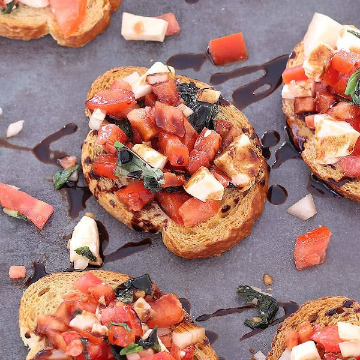
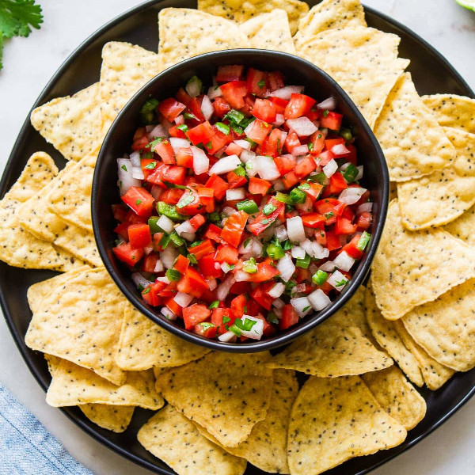
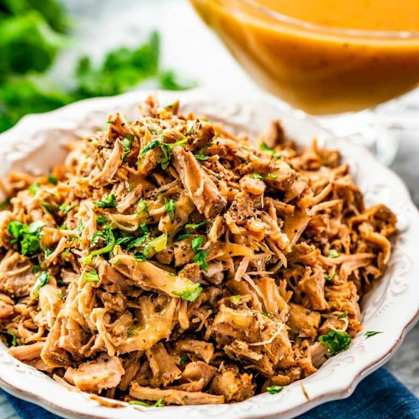

Explore more than just "Classic Americana" Discover a whole world of flavors.
Browse RecipesOdin Recipes
-
 Bruschetta
Grilled bread, rubbed with garlic, drizzled with olive oil, and topped with tomatoes and herbs. Usually served as an appetizer.
See Recipe -
 Pico de gallo
A Mexican salsa. Made with fresh ingrediants. It can be used to add crisp bold taste to tacos and nachos.
See Recipe -
 Carnitas
Slow cooked pulled pork that is then crisped in it's own juices in a cast iron skillet. Perfect for tacos.
See Recipe